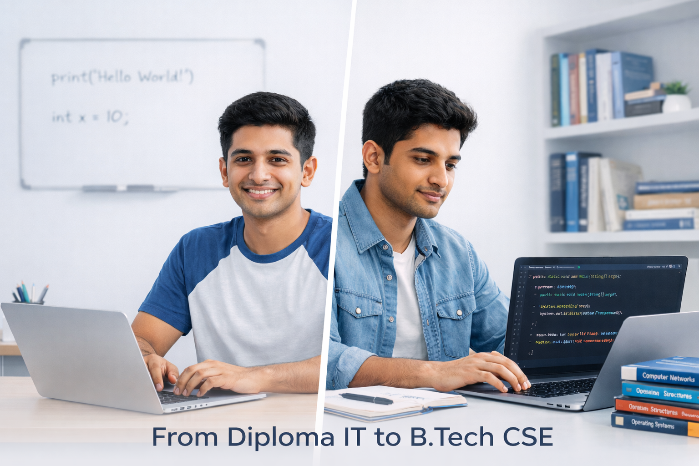
A personal transition story that reflects real growth, showing how mindset, adaptability, and self-driven learning help handle academic pressure without losing confidence or direction.
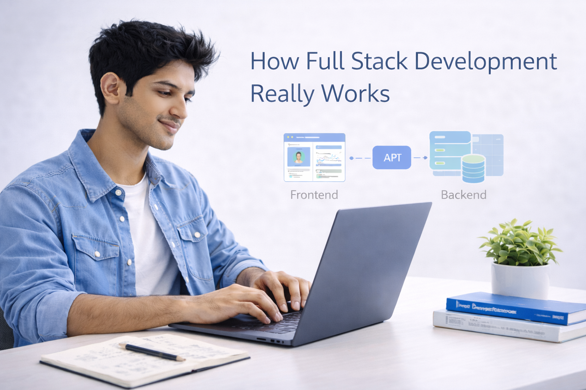
An honest learning experience that shows how confusion slowly turns into clarity through hands-on practice, real projects, and understanding how different layers of development connect.
A practical insight into what actually creates impact during placements, focusing on problem-solving ability, clarity of thinking, and real-world understanding beyond exam preparation.
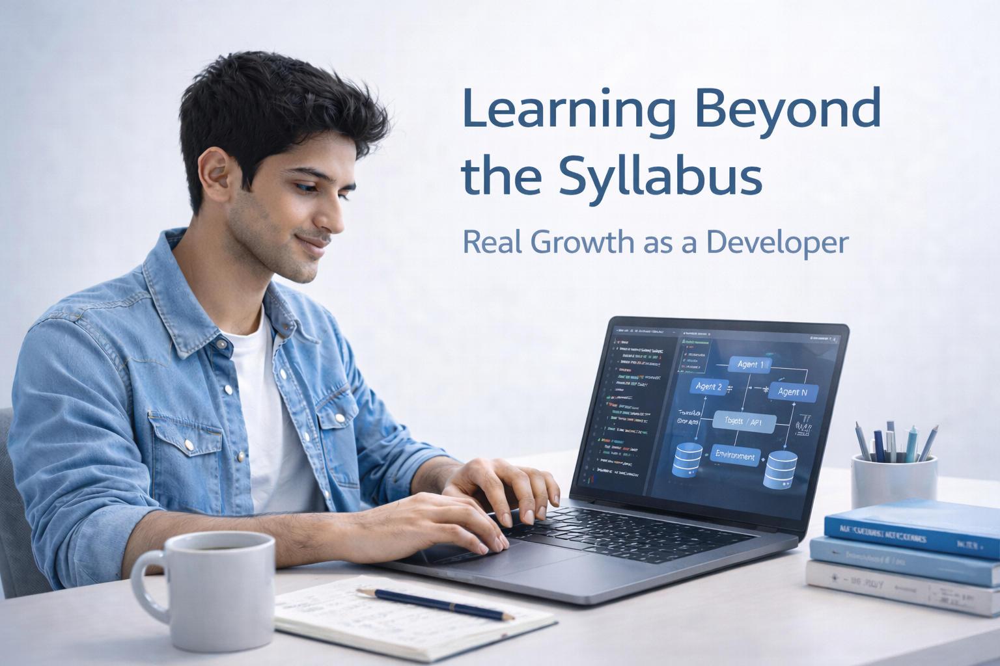
A reflection on how meaningful growth happens outside classrooms, driven by curiosity, experimentation, and consistent self-learning rather than syllabus boundaries.
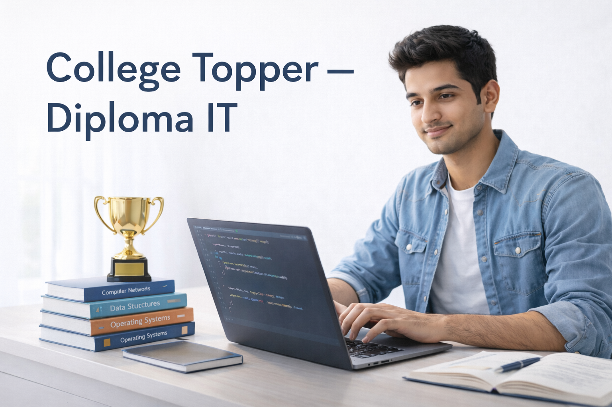
A disciplined academic journey built on smart study habits, regular practice, and steady effort, proving that consistency matters more than shortcuts or last-minute pressure.
A realistic approach to handling exam pressure, limited time, and internal assessments using calm planning, focused revision, and practical preparation.
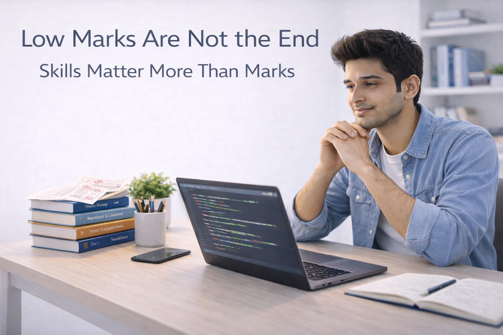
A motivating perspective that shifts focus from temporary exam results to long-term skill building, confidence, and continuous personal improvement.
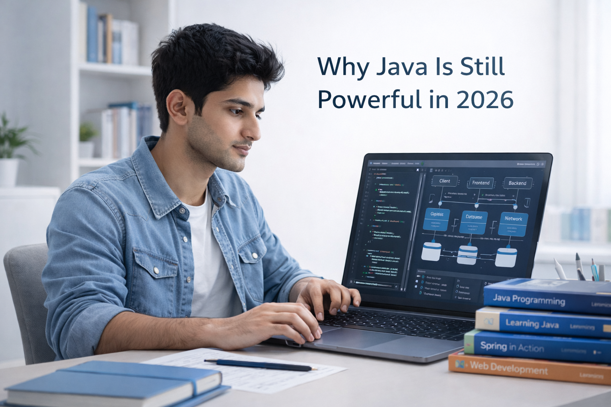
An experience-based view on why structured thinking, stability, and strong fundamentals remain valuable in modern software careers despite changing technologies.
A clear and simplified learning direction that helps avoid overload by understanding what to learn first, what to delay, and how steady progress really works.
A realistic breakdown of early learning mistakes, showing how rushing, skipping basics, and fear of failure slow growth and how awareness helps overcome them.
Insights gained from global exposure, challenging environments, and diverse thinking that strengthened confidence, learning approach, and technical understanding.
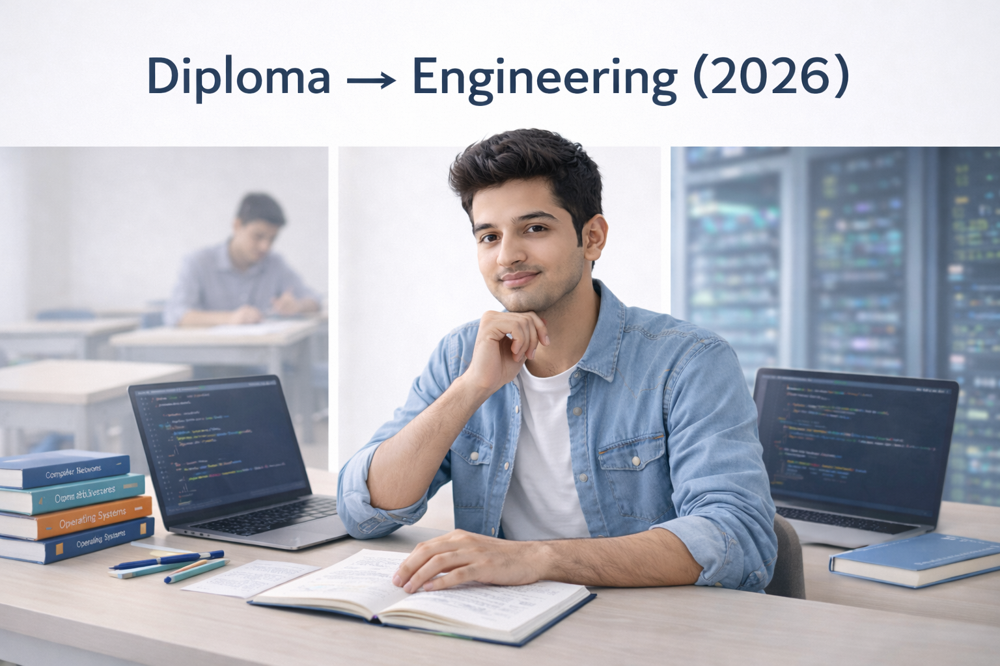
A thoughtful comparison of two learning paths, showing how early practical exposure and deeper academic study can complement each other when used wisely.
A mindset-focused reflection on how discipline, patience, and regular effort outperform natural ability in long technical journeys.
A personal belief-driven perspective on how thoughts shape actions, habits, and long-term outcomes, especially during difficult learning phases.
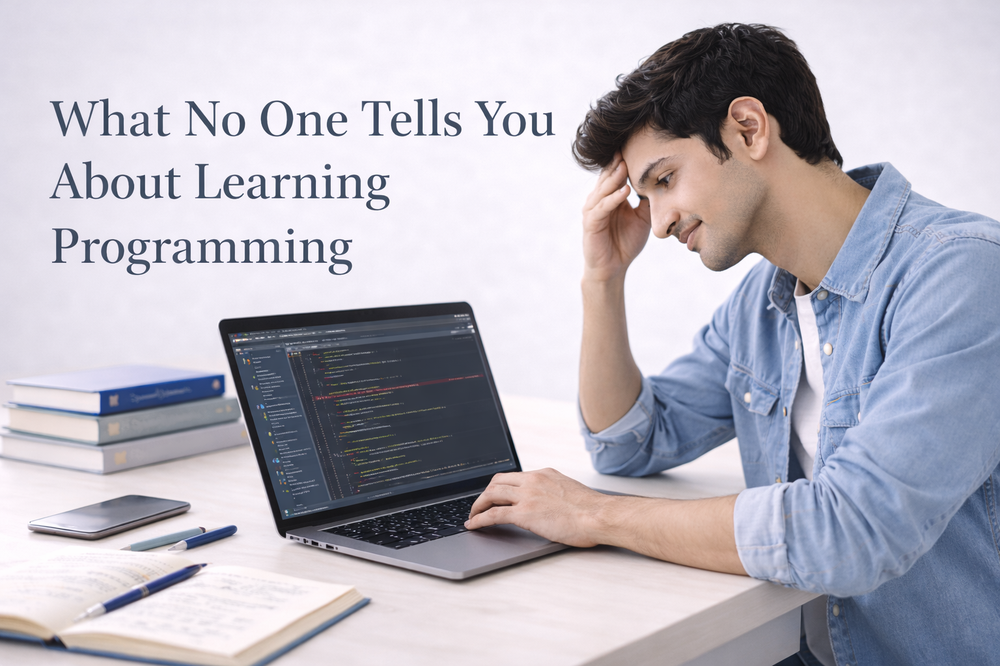
A real look at the hidden struggles of programming, including confusion, slow progress, repeated failures, and why persistence matters most.
A practical view on using online platforms as learning journals and growth showcases rather than popularity tools, with honesty and clarity.
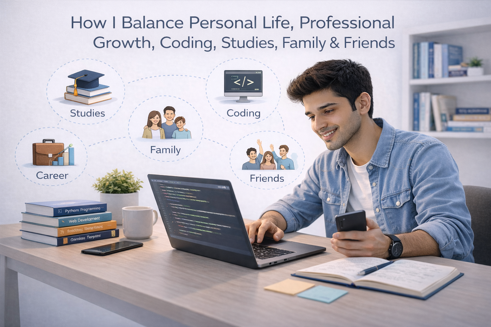
A realistic approach to managing studies, skills, family, and personal time, showing that balance is about adjustment, not perfection.
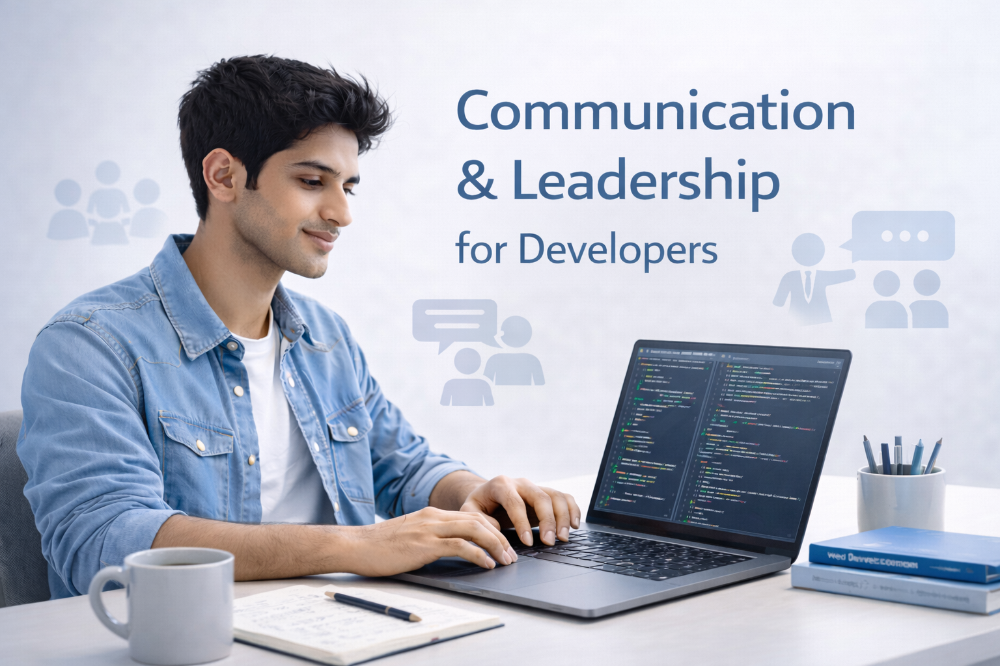
An explanation of how clear communication, responsibility, and collaboration directly influence professional growth in technical careers.
A beginner-friendly financial learning approach focused on discipline, patience, and risk understanding instead of chasing quick profits.
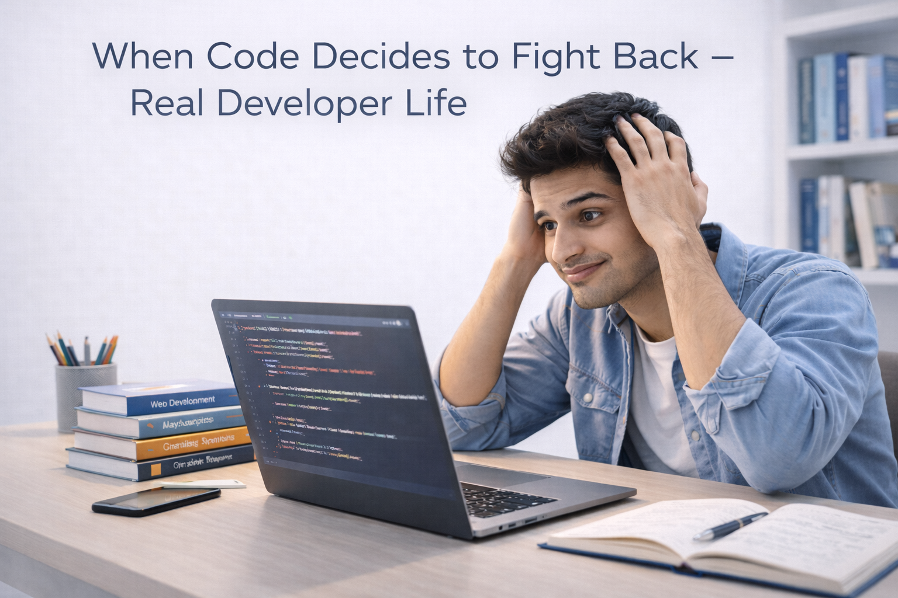
A relatable take on real developer struggles, including frustration, late nights, mental fatigue, and the small wins that keep motivation alive.